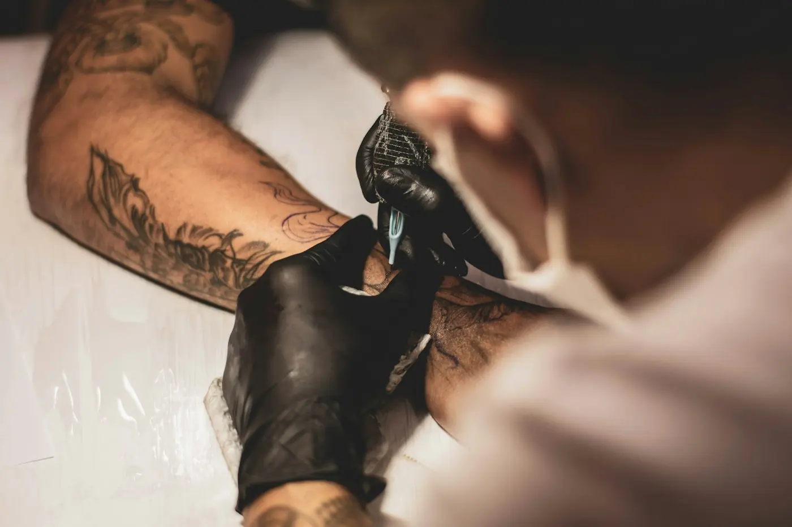
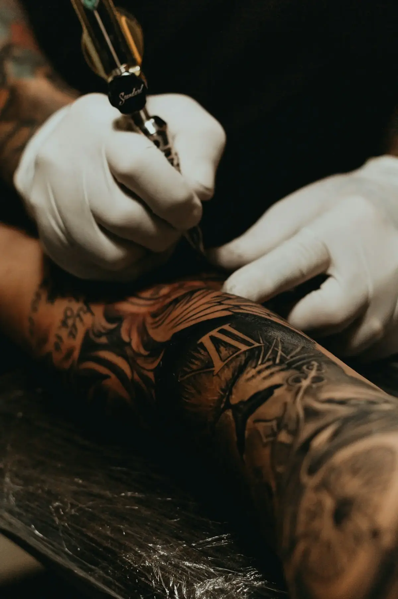
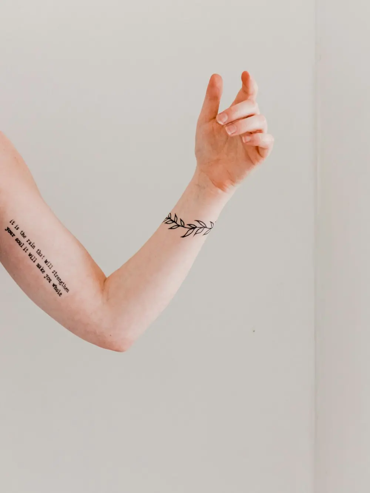
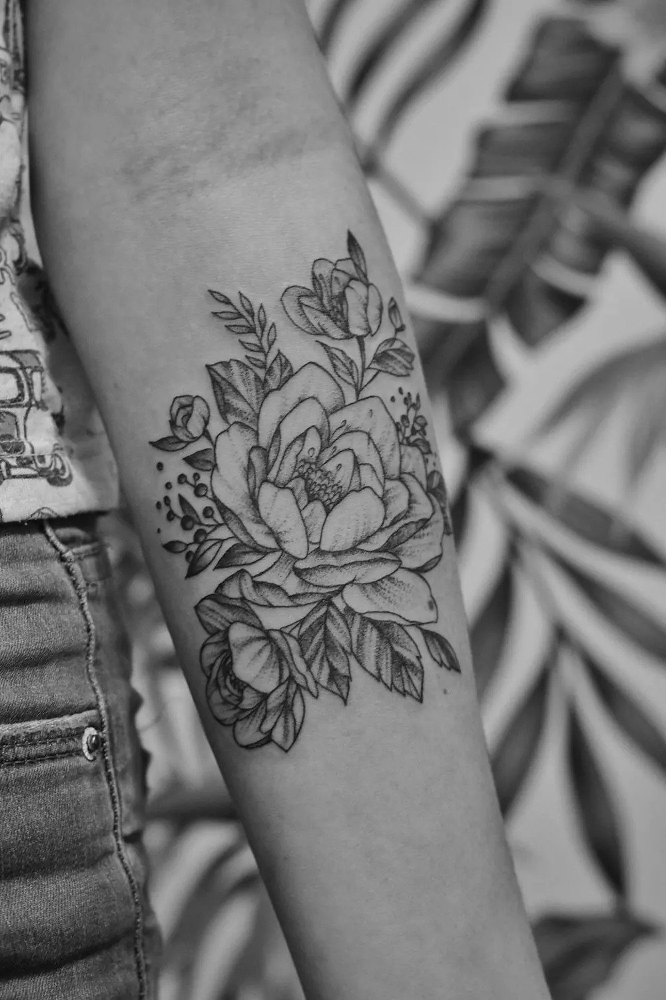
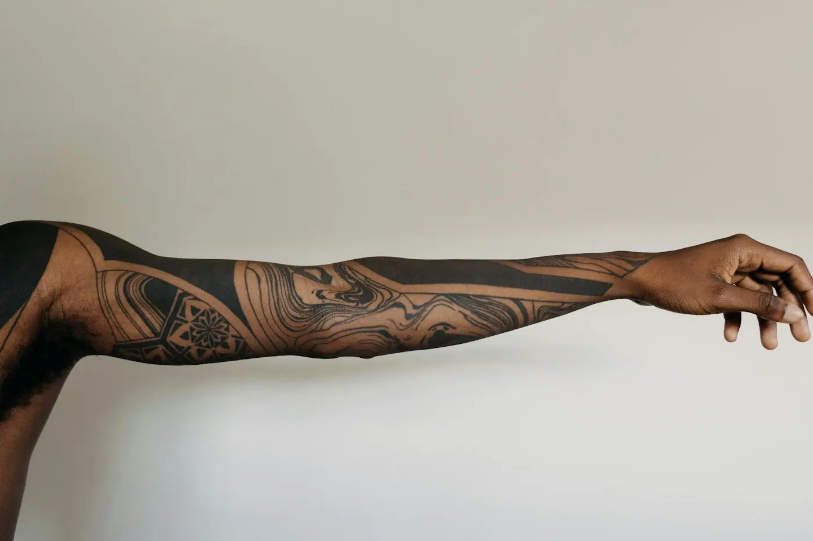
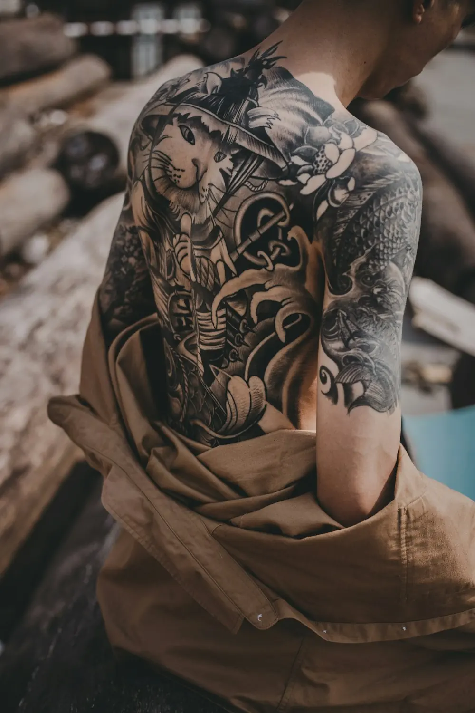
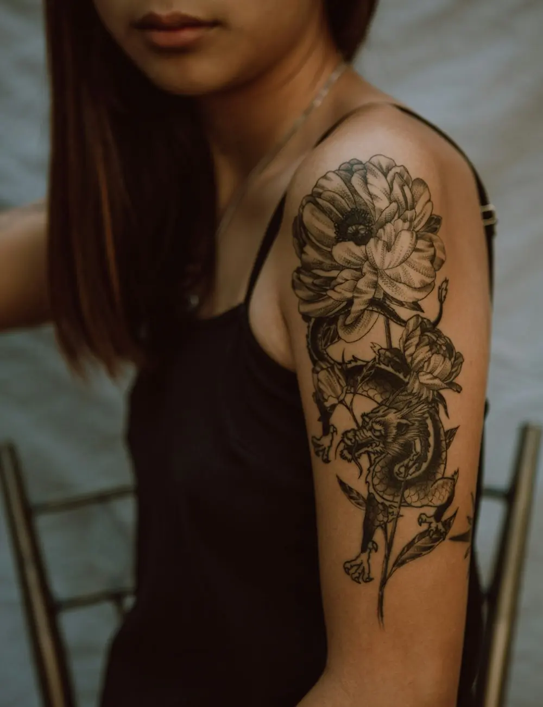

I.
Tattoos
Van een fijn lijntje tot een stuk dat je hele arm vult. Breng foto's, een schets of gewoon een gevoel mee. Samen zoeken we de juiste grootte en de juiste plek op je lichaam.
Een eerste kleine tattoo, een groter stuk waar je al jaren over nadenkt of een nieuwe piercing. Kom langs met je idee, dan bekijken we samen wat mogelijk is.

Tattoo PerreEen tattoo draag je een leven lang, een piercing zit dicht op je huid. Daarom nemen we de tijd om naar je te luisteren, alles uit te leggen en pas te beginnen als het voor jou goed voelt.

Van een fijn lijntje tot een stuk dat je hele arm vult. Breng foto's, een schets of gewoon een gevoel mee. Samen zoeken we de juiste grootte en de juiste plek op je lichaam.

Oor, neus of iets anders in gedachten? We leggen rustig uit hoe het gaat en hoe je er daarna voor zorgt.
Geen haast en geen verrassingen. Zo verloopt het meestal, van je eerste bericht tot de dag dat je naar huis gaat met je nieuwe tattoo.
Via WhatsApp, met een foto of schets erbij. Zeg ook waar je hem wil en hoe groot ongeveer.
Wat kan er, wat blijft mooi na jaren en wat past bij jouw huid? Ook als het antwoord anders is dan je dacht.
Overdag of 's avonds na je werk, op een moment dat jou past.
Je gaat naar huis met uitleg over de verzorging. Toch nog een vraag achteraf? Stuur gerust een bericht.
Van maandag tot vrijdag zijn we er tot 20u. Zaterdag tot 16u30. Zo vind je altijd wel een moment.
Elke tattoo vertelt iets van wie hem draagt. Groot of klein, zwart of in kleur: het begint altijd met jouw idee.




Gemiddeld uit 83 reviews. Een paar van onze klanten, in hun eigen woorden.
“Very good tattoo & piercing studio! Friendly & Professional”Google-review
“Top top top!”Google-review
“Best one i know”Google-review
Stuur je idee via WhatsApp, met een foto of schets erbij. Of bel even, dan plannen we samen een moment.
Ik maakte deze demo voor jullie om te tonen wat er kan. Na een kort gesprek maak ik er iets veel persoonlijkers van, helemaal naar jullie wens.
Vrijblijvend. Ik kom langs of we bellen.
Op maat, op jullie eigen domein.
Geen voorschot. Jullie betalen pas als alles klaar is.
Hosting, domeinnaam en kleine wijzigingen, zoals nieuwe openingsuren.
Omdat een voorbeeld meer zegt dan een mail. Zo zien jullie meteen wat er kan, en het kost jullie niets.
Nee. Het gesprek is vrijblijvend. Vinden jullie het niks, dan is het daarmee gedaan.
Na ons gesprek staat jullie site binnen 10 tot 14 dagen online.
Zeker. Jullie domeinnaam kan gewoon blijven, de nieuwe site komt in de plaats van de oude.
Nee, dat doe ik op basis van ons gesprek. Eigen foto's zijn mooi meegenomen, maar niet nodig om te starten.